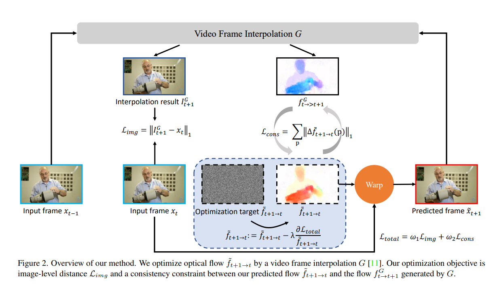
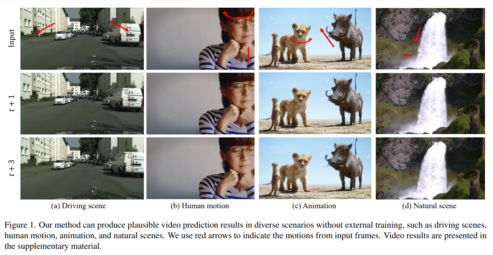

Optimizing Video Prediction via Video Frame Interpolation
Abstract
Video prediction is an extrapolation task that predicts future frames given past frames, and video frame interpolation is an interpolation task that estimates intermediate frames between two frames. We have witnessed the tremendous advancement of video frame interpolation, but the general video prediction in the wild is still an open question. Inspired by the photo-realistic results of video frame interpolation, we present a new optimization framework for video prediction via video frame interpolation, in which we solve an extrapolation problem based on an interpolation model. Our video prediction framework is based on optimization with a pretrained differentiable video frame interpolation module without the need for a training dataset, and thus there is no domain gap issue between training and test data. Also, our approach does not need any additional information such as semantic or instance maps, which makes our framework applicable to any video. Extensive experiments on the Cityscapes, KITTI, DAVIS, Middlebury, and Vimeo90K datasets show that our video prediction results are robust in general scenarios, and our approach outperforms other video prediction methods that require a large amount of training data or extra semantic information.
Overview

Overview of our method. We optimize optical flow from frame t+1 to t by a video frame interpolation G.
Our optimization objective is image-level distance L(img) and a consistency constraint L(consistency) between our predicted flow and the flow generated by G.
Results
Our method can be applied to various scene.
Demo GIF.